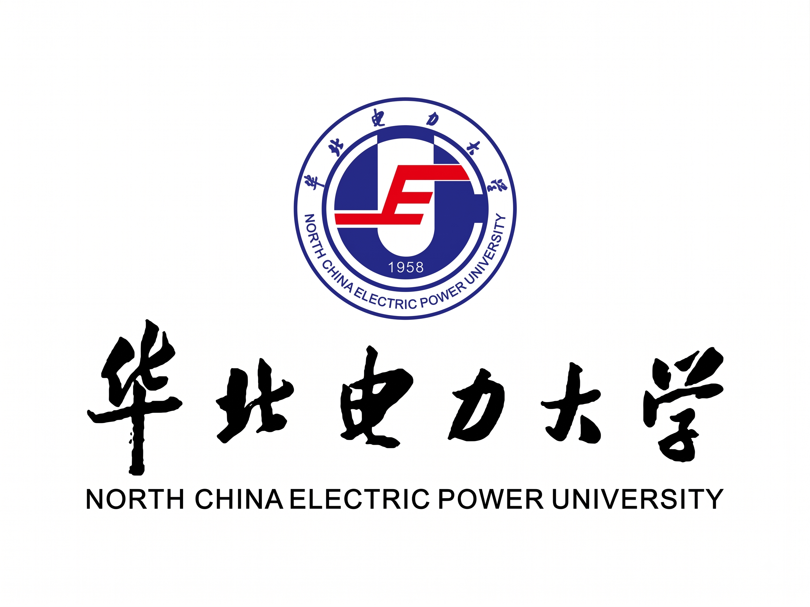

自我描述 About
I am Ruixiang Zhao, an undergraduate ('24) majoring in Data Science and Big Data Technology at the Department of Mathematics and Physics, North China Electric Power University. With a 4.01 GPA (ranked 2/59) and strong performance in core courses—Mathematical Analysis (98), Probability Theory (99), and C/C++ Programming (98). I focus on combining mathematical rigor with practical engineering, and am proficient in the Linux development environment.
In terms of technical capabilities and applications, I focus on the real-world deployment of artificial intelligence. I am proficient in leveraging AI Agents and Large Language Models as efficient tools to integrate into research workflows, handle complex tasks, and solve practical problems. Additionally, I have mastered the core knowledge of computer vision from CS231n and completed building the minGPT project from scratch on GitHub, deepening my understanding of underlying model mechanisms by deconstructing the Transformer architecture.
To me, AI is both a research subject and a powerful research tool. I aim to pursue further studies in AI-related domains, combining solid mathematical and programming foundations with flexible AI application skills to explore concrete research topics deeply.
我是赵瑞翔，华北电力大学数理系数据科学与大数据技术专业 2024 级本科生。我的 GPA 为 4.01，专业排名 2/59，在数学分析 98 分、概率论 99 分、C/C++ 98 分等科目上取得了较扎实的成绩。我注重理论与实践相结合，熟悉 Linux 开发环境。
在技术能力与应用方面，我关注人工智能领域的实际落地。我熟练掌握 AI Agent 与大模型的使用，能够将其作为高效工具融入科研流程、处理复杂任务并解决实际问题。同时，我掌握了 CS231n 计算机视觉的核心知识，并在 GitHub 上从零实现了 minGPT 项目，通过拆解 Transformer 基础架构来加深对模型底层机制的理解。
人工智能对我而言既是研究对象，也是强大的科研工具。我希望未来能在 AI 相关方向继续深造，将扎实的数理编程功底与灵活的 AI 应用能力相结合，在具体的科研课题中展开深入探索。
动态 News
-
从零手写实现 minGPT 项目，深入拆解 Transformer 基础架构与底层机制
-
深度修完 Stanford CS231n 计算机视觉课程并完成配套 Assignment
-
入门具身智能，整理并复现 ACT 核心算法笔记
-
学习现代 CS 研究必备技能，熟练掌握 Linux 开发环境、Git 版本控制与开发工具流
-
正式开启AI相关领域的系统学习
-
入学华北电力大学数理系 数据科学与大数据技术专业
教育经历 Education

华北电力大学（保定）· 数理系 · 数据科学与大数据技术
- C/C++程序设计 98
- 数学分析(1) 98
- 离散数学 97
- 概率论 99
- 数据结构与算法 92
- 线性规划 95
技术栈 Tech Stack
语言 Languages
Python · C++
框架 Frameworks
PyTorch
工具 Tools
Git · Linux · Tmux · Docker
研究兴趣 Research Interests
大模型Large Models
深入理解 Transformer 架构与底层机制，从零手写实现 minGPT，关注模型训练、微调与推理优化
具身智能Embodied AI
机器人控制与操作策略学习，跟进 ACT 等核心算法，关注仿真到真实的落地
AI 应用与 AgentAI Applications & Agents
熟练运用 AI Agent 与大模型构建高效工具链，融入科研与实际工作流，解决复杂问题
项目 Projects
具身智能自主学习与开源实践
独立跟进领域前沿，整理 ACT 等核心算法的原理笔记与代码复现，开源至个人仓库
从零实现 minGPT
基于 PyTorch 从零手写 Transformer 架构，逐层实现多头注意力、前馈网络与训练管线，深入理解 GPT 底层机制
荣誉奖项 Honors
- 2026中车杯 国家三等奖
- 2026全国大学生数学竞赛（数学类）省级二等奖
- 2025校级二等奖学金
- 2025校级三好学生
- 2025校级志愿服务先进个人（累计志愿时长 129 小时）
博客 Blog
全部文章 →正在加载文章…
联系方式 Contact
- 220241100130@ncepu.edu.cn 主邮箱
- 2529649711@qq.com 备用邮箱
- github.com/zrxhewenyi GitHub